GV framework documentation version 1.4
Thanks for using GV framework!
You are awesome!
The goal of GV is to create web services or web sites as fast and robust as possible, following the convention over configuration technique, Hexagonal architecture patterns and market standards.
Through this documentation I assume that you have some knowdledge of PHP, usage of the command line, and databases in general.
This documentation is to help you regarding each step of your development. Please go through the documentation carefully to understand how this framework was made and how to use it.
You will need the following dependencies to make GV work.
Docker will create all the containers needed for GV to work as fast as possible
You can still install everything manually, and the information for it will be provided.
GV is composed by a lot of pieces, among them you will find:
We will cover everything on this page, so, dont be worried about fancy wording.
And of course GV itself is open source with a public repository on GitHub.
Before we go into the installation process, lets be sure that you have the required software installed
docker -v
docker-compose -v
git --version
If the output of those commands are ok, you are ready to start :)
There are two ways of using GV, through docker and manually.
Please read more about docker here.
Before we start, clone GV repository into any directory that you would like to work, for instance:
$> mkdir repos
$> git clone git@github.com:veraguido/gv.git
Or if you use composer, just do:
$> composer create-project gvera/gv
We are ready to generate our 4 docker containers now, those are going to be separated in: nginx, php, mysql and redis
Place yourself in the root folder of GV and run:
$> ./gvconsole build
After the command is finished, our containers are ready to be started:
$> ./gvconsole up
Provision your database:
./gvconsole doctrine orm:schema-tool:create
Now navigate to localhost:8089 in your browser to check if the installation was successful. You should be able to see the welcome json object indicating the version of GV and the cache that is being used.
Be sure to install: the web server of your choice, php, composer, mysql and redis.
Configure your web server's virtual hosts to point all its requests to public/index.php which is the application's entry point
go to config/config.yml and configure your app to change your database's credentials
gvconsole is a shell script that will lead you thorugh all the administration options.
The idea is to manage everything through gvconsole {available_command}
For starting, let's list all the possible commands with gvconsole
$> ./gvconsole
That command will output:
-/*-/*-/*-/*-/*-/*-/* APPLICATION COMMANDS -/*-/*-/*-/*-/*-/*-/*
clear-cache
create-controller
create-model
create-user
create-user-role
create-user-role-action
create-user-status
disable-task
doctrine
doctrine-migrations
enable-task
generate-api-doc
list-user-roles
scheduler
tests
list-tasks
-/*-/*-/*-/*-/*-/*-/* DEPENDENCY COMMANDS -/*-/*-/*-/*-/*-/*-/*
composer
-/*-/*-/*-/*-/*-/*-/* BUILDING COMMANDS -/*-/*-/*-/*-/*-/*-/*
build
phpcs
phpcbf
-/*-/*-/*-/*-/*-/*-/* CONTAINER MANAGEMENT COMMANDS -/*-/*-/*-/*-/*-/*-/*
start
stop
up
down
logs
enter
We will go one by one, don't worry.
In a typical gv application, the cache is going to be managed by redis, but redis is not mandatory, the strategy is, gv will ping redis, if this one is available it will be used, if not, the files cache strategy will be put in place.
If redis is not used, the cache will be stored in the var/cache/files/ directory. Note: this fallback can be changed on the config file.
./gvconsole clear-cache
usage example: clear-cache 1
Please select the option:
--------------------------
1 - Flush all
2 - Flush config
3 - Flush routes
4 - Flush translations
5 - Flush controller names
--------------------------
The create controller that will help you to create your controller in the correct path, and extending the correct base class. Parameters are: class name and method names separated by space
./gvconsole create-controller
usage example: ./gvconsole create-controller Cars \
list create update delete
The create models command will guide you thorgh the process, doctrine is used as the ORM for GV so please, if you haven't heard about it read the documentation.
Usage:
./gvconsole create-model
GV uses doctrine as the defacto ORM, to execute the doctrine commands, run:
./gvconsole doctrine
Please if you have doubts about doctrine, read their documentation.
./gvconsole doctrine
#!/usr/bin/env php
Doctrine Command Line Interface version 2.4.8
Usage:
command [options] [arguments]
Options:
-h, --help Display this help message
-q, --quiet Do not output any message
-V, --version Display this application version
--ansi Force ANSI output
--no-ansi Disable ANSI output
-n, --no-interaction Do not ask any interactive question
-v|vv|vvv, --verbose Increase the verbosity of messages: 1 for normal output, 2 for more verbose output and 3 for debug
Available commands:
help Displays help for a command
list Lists commands
dbal
dbal:import Import SQL file(s) directly to Database.
dbal:run-sql Executes arbitrary SQL directly from the command line.
orm
orm:clear-cache:metadata Clear all metadata cache of the various cache drivers.
orm:clear-cache:query Clear all query cache of the various cache drivers.
orm:clear-cache:result Clear all result cache of the various cache drivers.
orm:convert-d1-schema Converts Doctrine 1.X schema into a Doctrine 2.X schema.
orm:convert-mapping Convert mapping information between supported formats.
orm:convert:d1-schema Converts Doctrine 1.X schema into a Doctrine 2.X schema.
orm:convert:mapping Convert mapping information between supported formats.
orm:ensure-production-settings Verify that Doctrine is properly configured for a production environment.
orm:generate-entities Generate entity classes and method stubs from your mapping information.
orm:generate-proxies Generates proxy classes for entity classes.
orm:generate-repositories Generate repository classes from your mapping information.
orm:generate:entities Generate entity classes and method stubs from your mapping information.
orm:generate:proxies Generates proxy classes for entity classes.
orm:generate:repositories Generate repository classes from your mapping information.
orm:info Show basic information about all mapped entities
orm:run-dql Executes arbitrary DQL directly from the command line.
orm:schema-tool:create Processes the schema and either create it directly on EntityManager Storage Connection or generate the SQL output.
orm:schema-tool:drop Drop the complete database schema of EntityManager Storage Connection or generate the corresponding SQL output.
orm:schema-tool:update Executes (or dumps) the SQL needed to update the database schema to match the current mapping metadata.
For using doctrine migrations, those are going to be put under resources/migrations/ directory
The command to be run to manage migrations is ./gvconsole doctrine-migrations
./gvconsole doctrine-migrations
#!/usr/bin/env php
Doctrine Migrations version v1.5.0
Usage:
command [options] [arguments]
Options:
-h, --help Display this help message
-q, --quiet Do not output any message
-V, --version Display this application version
--ansi Force ANSI output
--no-ansi Disable ANSI output
-n, --no-interaction Do not ask any interactive question
-v|vv|vvv, --verbose Increase the verbosity of messages: 1 for normal output, 2 for more verbose output and 3 for debug
Available commands:
help Displays help for a command
list Lists commands
migrations
migrations:diff Generate a migration by comparing your current database to your mapping information.
migrations:execute Execute a single migration version up or down manually.
migrations:generate Generate a blank migration class.
migrations:latest Outputs the latest version number
migrations:migrate Execute a migration to a specified version or the latest available version.
migrations:status View the status of a set of migrations.
migrations:up-to-date Tells you if your schema is up-to-date.
migrations:version Manually add and delete migration versions from the version table.
Unit tests are created under the tests directory in the root of the project, Phpunit is used for them. if you have any doubt please read their documentation.
To run unit tests, please use ./gvconsole phpunit
./gvconsole phpunit
The scheduled tasks are basically cron jobs that will execute your tasks on a specific moment in time.
GV will handle the setup for it you only need to focus on 3 things: create the task that you want to execute, enabling your task and disabling it if you want.
Tasks should be put in the tasks directory under Resources
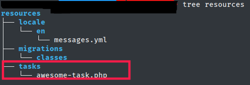In your task you can do whatever is needed, for instance, could be, log amount of orders created, get information from an external system and save it into the database, run a mysql query, etc.
In order to enable your scheduled task use the gvconsole command:
./gvconsole enable-task \* \* \* \* \* {name of your task as you have it on your tasks folder, without the .php} {identifier for deletion}
If you are wondering what are the * in the command, please read this.
For example:
./gvconsole enable-task \* \* \* \* \* awesome-task aw3some
The selected task, in this case will run every minute, and will log a specific message through logger.
To remove a task use the gvconsole disable-task command, using the identifier when you enabled it.
./gvconsole disable-task aw3some
If you don't remember the identifier of a command use the gvconsole list-tasks command:
./gvconsole list-tasks
$> ./gvconsole list-tasks
* * * * * php resources/tasks/awesome-task.php >> var/log/cron.log #aw3some
All your tasks will log their output into the var/log/cron.log file
To enter into any of the containers that gv provides you need to run:
$> ./gvconsole enter {name_of_the_container}
The containers that gv creates by default are: gv_mysql_1, gv_redis_1, gv_nginx_1 and gv_php_1
You can create users, user roles and user role actions, for example:
$> ./gvconsole create-user-role admin 10
$> ./gvconsole create-user admin admin@admin.com complexPassword admin
$> ./gvconsole create-user-role-action canpublish admin
We first create a new user role with the role name and a role priority (an integer defined by you) as a second parameter.
We then use the create-user command with: username, email, password and role name as parameters.
Lastly, and only if you want to use it on your application, we define a role action with a role name as a second parameter
If you use the openAPI standard on your controllers you can generate the api docs with:
$> ./gvconsole generate-api-doc
This will scan all your controllers and generate the api documentation, which will be under /doc
Note: the documentation is under basic authentication and you have to have a valid user to access it.
Let's imagine that you need to validate the input set from your HttpRequest. GV has a set of rules for you to do this very easily, following convention over configuration through the ControllerValidationAbstract class.
You could use a new Validation Object, which will be separated from anything else, and then use the validate() method. Look at the example below:
We have a method inside our Examples controller called login, this action expects to receive username and passoword fields.
We then need to Create a new class with the same controller name and method name but under the Validations directory, extending ControllerValidationAbstract like this:
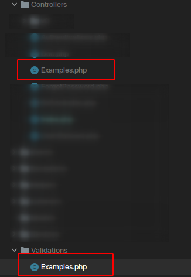Then we need to implement the same method name we want to validate, in this case login() utilizing the protested "fields" property.
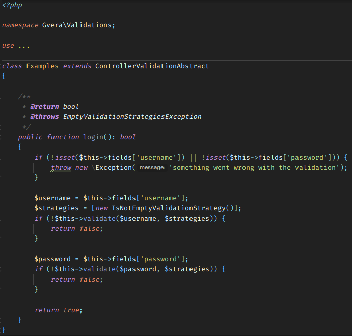Lastly inside your controller the only thing you need to do is $this->httpRequest->validate()
Let's imagine that you need to validate a specific field that is comming from the request. In this case is will be the "email" field
In this field you need to validate a set of rules, first that the field is not empty, then that the field is a valid email string.
GV has a validation service for you to use and validate your fields. Usage:
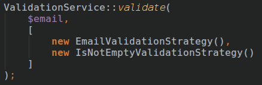This will return true, false or throw an exception.
There are 3 validation strategies in place, you can add the ones that you need for your project extending the ValidationStrategyInterface, and hopefully send the pull request to the gv main repo :)
All the requests sent to a gv application will go through the index.php file located at the public folder, this is managed though the .htaccess file
Gv has a set of classes that are responsible of the http lifecycle, those are HttpRequest and HttpResponse. This two classes are already initialized and put into the main controller class.
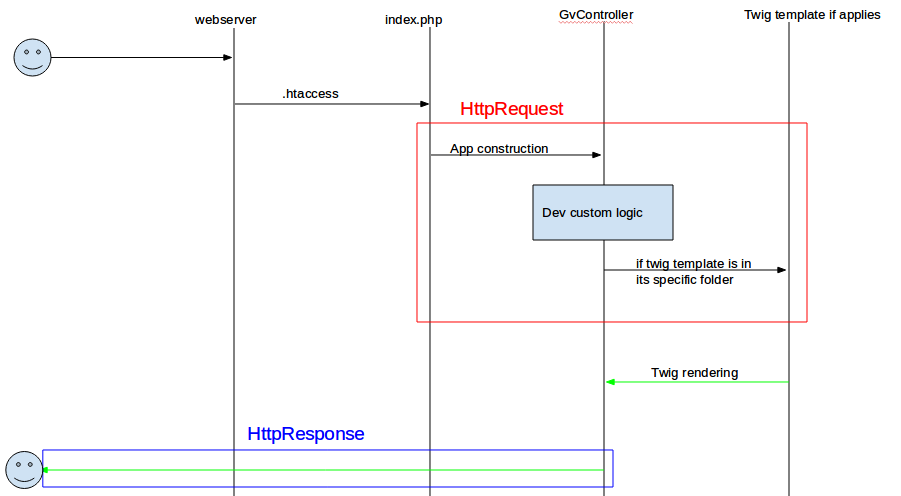HttpRequest
HttpRequest has the getParameter method that will return the fields wanted. For instance, inside a controller you can:
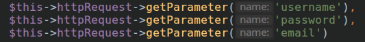Within the HttpRequest You can also check the request method using isPost(), isGet(), isDelete(), isPut() and isPatch()
When you want to generate a response, you can use Any of the built-in response types: Response, JSONResponse, TransformerResponse or PrintErrorResponse
HttpResponse
In your controller you can setup your httpresponse, the default behavior will be:
The methods available in the HttpResponse class are:
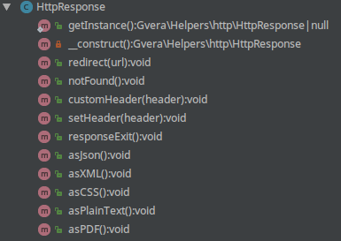You can add http method validation to your controllers, by using the @httpMethod annotation, as an example:
/**
* @httpMethod("GET")
*/
public function view()
{
//your code here
}
The above will validate that the actual request is of that method (in this case a get method)
Tip: you can use multiple Http methods in this annotation, for instance @httpMethod("GET", "POST", "PUT")
GV includes an event mechanism ready to be used. This mechanism is composed by different parts.
All your event listeners will need to be registered in this Class, inside GvEventListenerRegistry->registerEventListeners() method, GV will handle the relationships after it. For example:
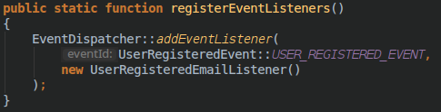Your events must be created under the events folder, and they need to extend from GvEvent for instance:
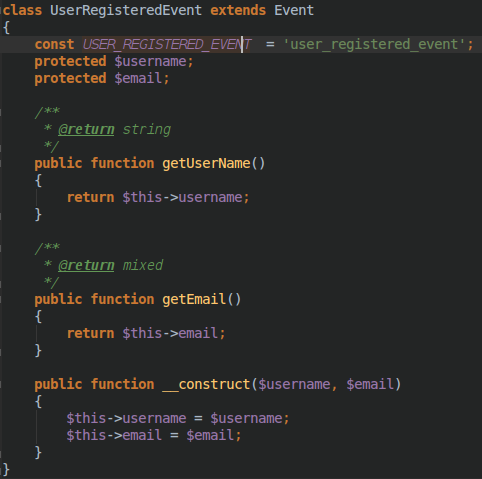Your listeners must implement EventListenerinterface and you must implement the handleEvent method that will be executed when the event is triggered. In the following example, the user will receive an email when the account is created, while devmode is not true.
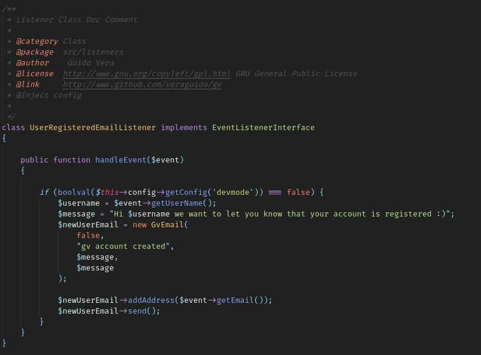The event dispatcher is the class that is going to dispatch the events that you need when you need it. For the sake of the example we will dispatch our event when a new user is created, the "CreateNewUserCommand"
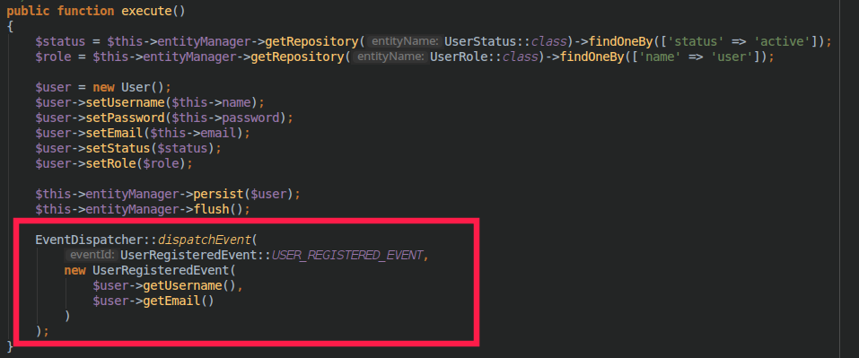GV includes a command pattern put in place for enforcing the hexagonal architecture and make your code frameworkless.
Your commands will need to implement CommandInterface, and you will need to implement the execute method. For example:
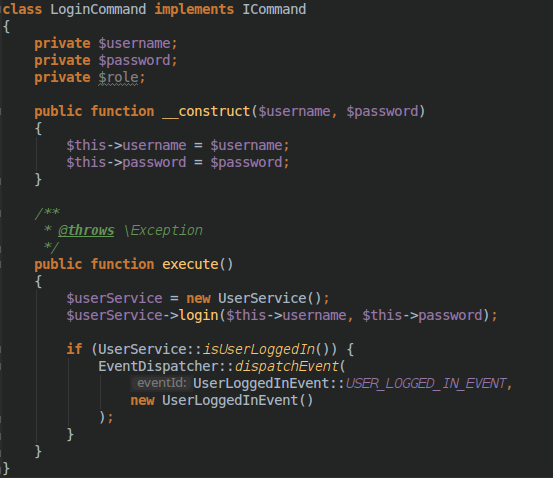Then you need to execute the command where you think is needed:
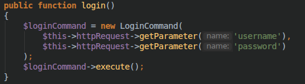GV was built with the idea of not having uneeded configuration files, that's why you only need to configure only one small yml file. config.yml is in the config directory.
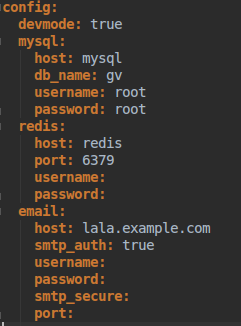If for some reason you want to avoid using the default url strategy of host/{controller}/{method} you can write your own url rewrite in the routes.yml file located at the config directory
The rules are, whatever you put between ":" will be counted as parameters of the http request, and then the action will be fowarded with {controller}->{method} follow the example
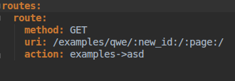GV comes with some pre-built Http response types: Response, JSONResponse, TransformerResponse, PrintErrorResponse
In your controller you just have to call $this->httpResponse->response() specifying which response you want. For example:
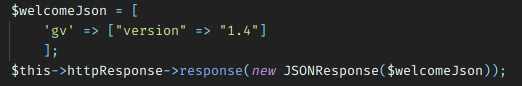GV was done with ease in mind, every exception thrown will be catched by the application and depending on the state of the app two things can happen:
As a good practice you can throw a GVException with parameters, that will be sent to the log through Logger.
A fractal transformer is a way of present filtered and serialized data as output on the response of your Restful API
When calling httpResponse->response() method, you can pass a TransformerResponse object, which will take care of the rest.
The way to do this is extending the TransformerAbstract class, and pass your object on the constructor. In this new transformer class you need to overwrite the transform method.
Please not that your transformer object should be on src/Helpers/transformers/ directory.
The transform method should return an array containing exactly what you need to response. See the example below:
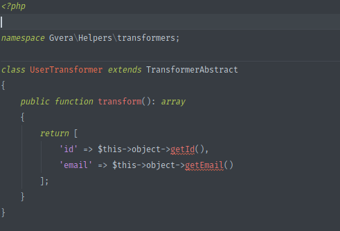Throttling will prevent DDOS or brute force attacks on your application, limiting the ammount of requests per second allowed on a given ip
Please note that for using throttling, your application has to use redis as the source of your cache.
The way of enabling throttling and the allowance is as easy as going into config/config.yml and change throttling value to true, as well as "allowed_requests_per_second" to the number you'd prefer.
Gv comes with xdebug to be used out of the box. You just need to check that the .docker/php.ini file has the needed lines for this not commented:
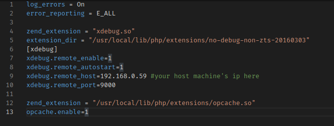In this case it would be from line 7 to 12, also remember to configure your ide with the correct configuration. For instance on Visual Studio code:
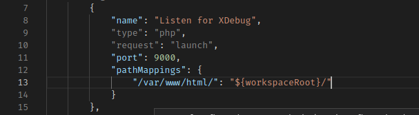or in PHPStorm:
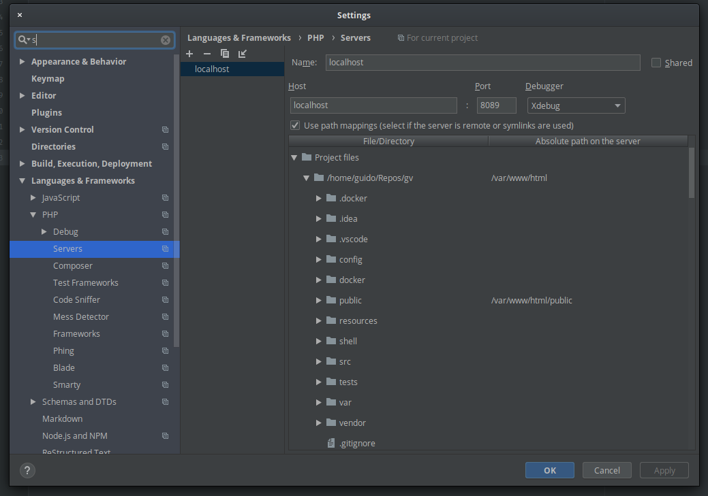You can obviously disable xdebug on the php.ini file
General recommendations for your project
GV provides a way of using dependency injection out of the box. This technique is based on inversion of control, giving the responsibility of the instatiation of the objects to the application based on rules.
The rules imposed in GV are three:
Let's take a look at an example
Inside the examples controller we can find the login method, inside it we can see that there's a call made to "getLoginCommand", all GvControllers have magic methods implemented. Meaning that you can call any ioc object from it's name
In this specific example, the object called is "loginCommand"
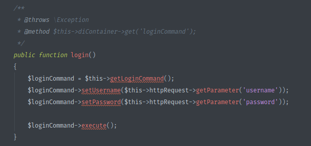you can use this example if you need to pass more than one object to inject in the constructor
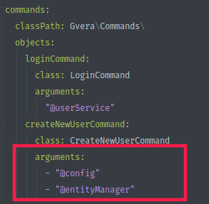Let's start taking a look at the ioc.yml
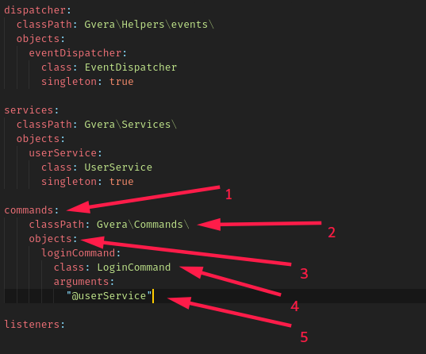Other valid nodes in your objects are: parameters (if you want to initialize your object with specific parameters, and singleton, if you want only one instance of your object to live on the application lifecycle
Now let's take a look at the LogginCommand Class.
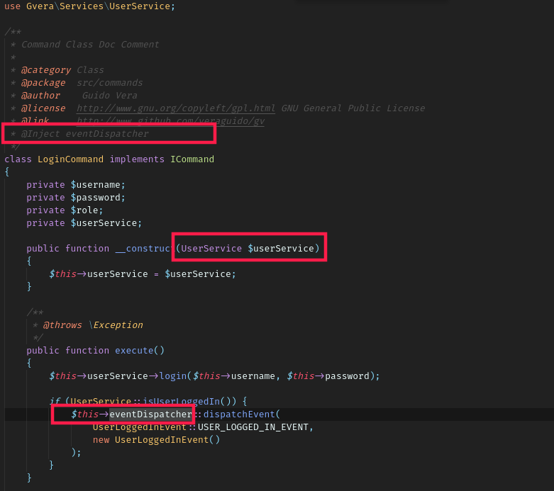We can identify 3 important things of this class:
Through this technique you can Inject objects within your objects through properties or in the constructor itself and forget about instantiation :)
I am just a regular guy that wanted to contribute to the open source community. I hope you enjoy GV as much as I enjoyed building it.
You will find more information about me here.
I am just a regular guy that wanted to contribute to the open source community. I hope you enjoy GV as much as I enjoyed building it.
You will find more information about me here.